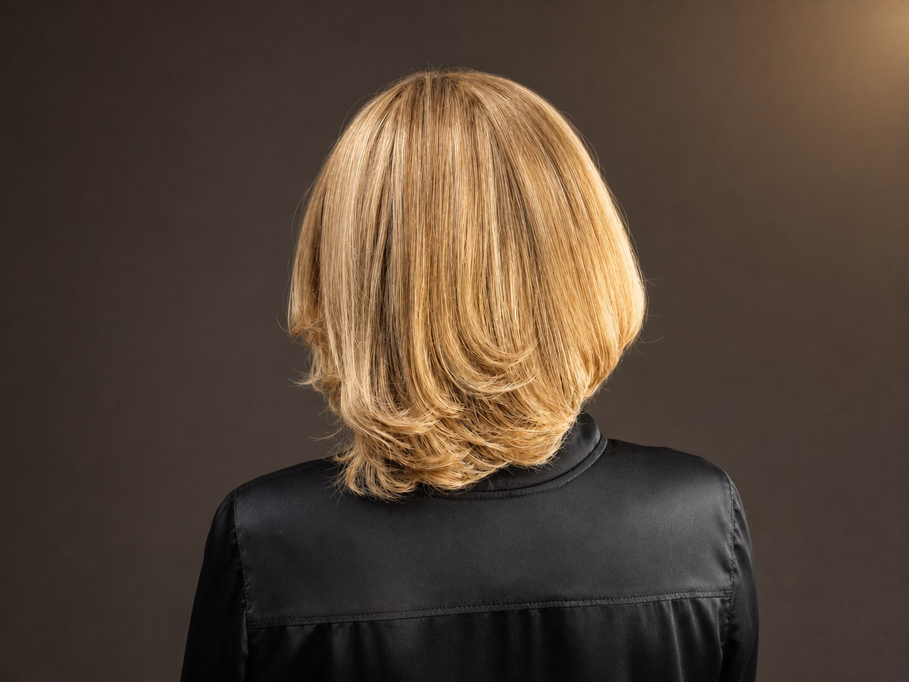
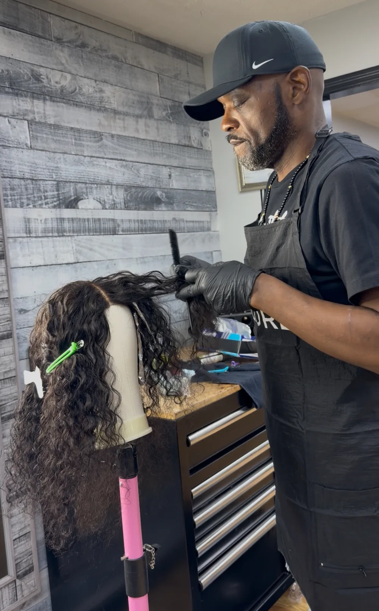
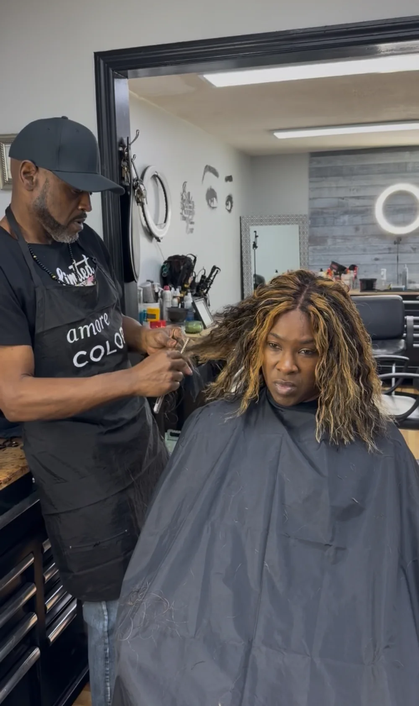
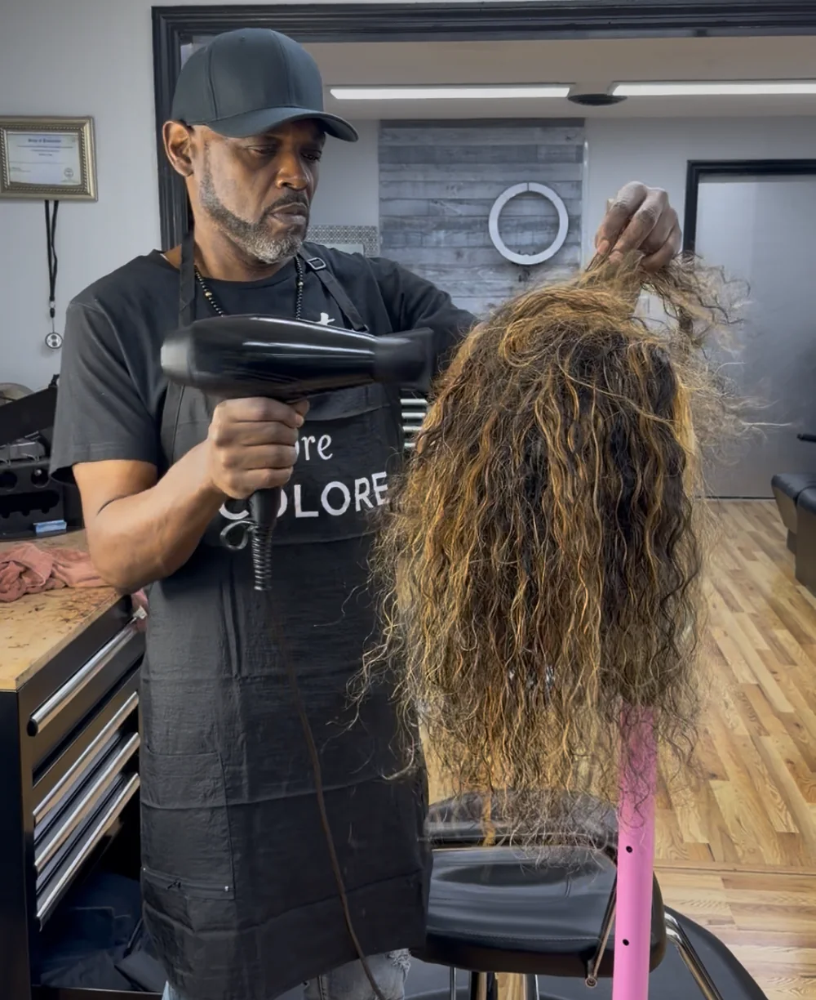

Listen & plan
Discuss the desired look, current hair, lifestyle, fit, density, color, and maintenance expectations.
The custom wig studio
A custom wig should feel considered from every angle. Teddy brings fit, density, color, shape, movement, and maintenance into one personal process.

The process
The consultation sets the direction. Teddy then develops the unit around the look, lifestyle, comfort, and maintenance needs discussed together.
Discuss the desired look, current hair, lifestyle, fit, density, color, and maintenance expectations.
Construction, color, cut, shaping, and detailed finishing are developed as one complete design.
The unit is fitted, adjusted, installed when requested, and styled with care instructions for home.

From every angle
Color placement, layering, density, and silhouette are considered together. The goal is a unit that supports the person wearing it—not a one-size-fits-all look.
Inside the craft

Details are developed section by section for the planned density, movement, and finish.

Fit and blending are adjusted around the client, hairline, parting, and desired wear.
Beyond the first fitting
The relationship does not end when the wig leaves the studio. Teddy can help you understand refreshing, blending, color upkeep, storage, and when a professional maintenance visit makes sense.

The back, sides, and movement deserve the same attention as the front.

Tone and dimension are adjusted for the planned cut and wearer.

Placement and finishing help the unit sit naturally with the chosen style.

Professional refreshes can restore shape, polish, and wearability.
Questions clients ask
No. Bring inspiration if you have it, but the consultation is where Teddy helps translate your lifestyle, comfort needs, color preferences, and maintenance level into a direction.
Sometimes. Teddy will need to see the construction, current condition, fit, and previous customization before confirming whether reshaping, recoloring, or restyling is appropriate.
Bring photos of looks you love, note when and where you plan to wear the unit, and share any sensitivity, fit, hairline, or maintenance concerns that may affect the design.
Pricing depends on the hair or unit selected, construction, length, density, color work, cutting, installation, and finishing required. Teddy confirms the scope after consultation.
Begin privately
Call or text Teddy to describe what you need. Photos are helpful, and a private in-person consultation may be recommended before construction begins.